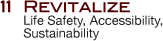
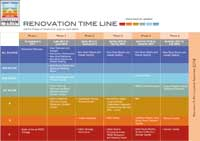

GOAL:
To make "getting there" easier — new paths, new signs, new color coding by floor. Plus, circulation will be organized consistently throughout the building, anchored by a new main corridor running north-south on each level and centrally stacked circulation/restroom core.GOAL:
To enhance reading spaces — Improved lighting, technology, and seating for better reading.GOAL:
To centralize all exhibitions onto the first floor, reconfigured into accessible, secure, climate-controlled spaces.GOAL:
To locate departmental graduate study rooms adjacent to their core collections and position them to maximize access to natural light where possible.GOAL:
To improve space and security for Rare Books and Special Collections — consolidated storage, adjacent staff space, enhanced reading room, new technologically enriched classrooms, layout space for large format materials and maps.GOAL:
To place library support functions, which do not require adjacency to Firestone collections, in new locations outside the library.GOAL:
To provide new, open study carrels for individual study spaces — natural light, power and technology, lockable storage for books and personal items.GOAL:
To enhance staff areas — new lounge, improved meeting spaces, natural light where possible, consolidated adjacencies for improved workflow and material security.GOAL:
To consolidate core library services into strategic, readily-accessible locations, maximizing space efficiencies and streamlining workflow.GOAL:
To reorganize the fixed stack layout and collection organization to increase overall collection browseability. GOAL:
To produce a safer, smarter, greener Firestone Library.In light of the library’s importance in teaching and research at Princeton, the University has committed to a comprehensive renovation of Firestone Library. The renovation is conceived as a long-term project with multiple phases that will take almost 10 years to finish, during which time the library will remain open and its collections available during normal hours of operation.
The plans for the renovation of Firestone are focused on creating a building that is well-suited to support modern library services and contemporary approaches to scholarship while also providing the proper environment for one of the world’s great book and manuscript collections.
Our team of experts has come together to carry out The Vision of “a refreshed and vibrant hub” that is not only outfitted with modernized systems and infrastructure but that also captures the character of the original 1948 building.
Proposed Main Lobby Entrance
Proposed 3rd Floor Reading Room, c. 2014

Renovation Time Line, click to enlarge
{kind=link}
Renovation Alerts
Fun Finds!
Weather & Traffic Reports
What’s Noisy? What’s Quiet?
What’s Open? What’s Closed?
Peggy Kehrer, Library Construction & Communications Coordinator
609.258.0925 or mkehrer@princeton.edu